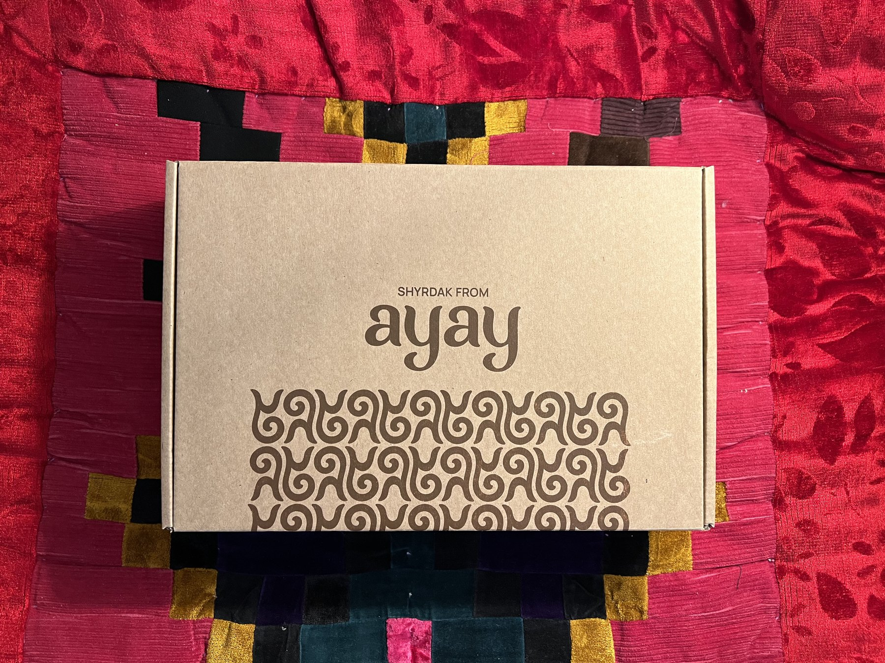
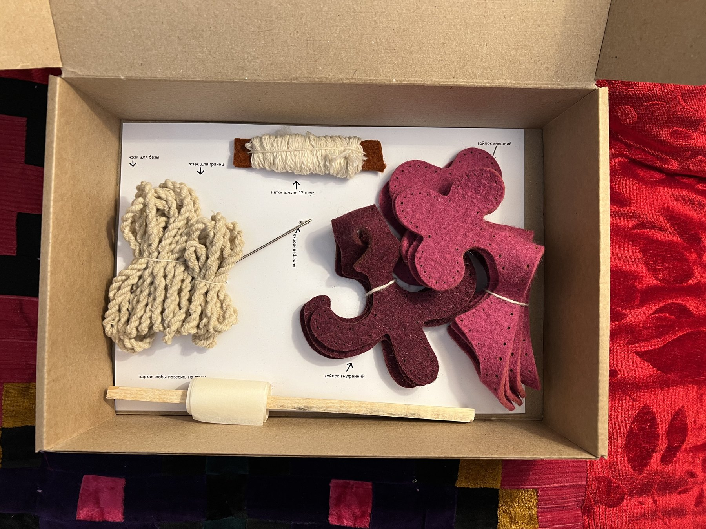

Мы верим, что общее дело сближает людей и помогает лучше узнать друг друга. Мы хотим предложить новый способ занятия, которое может вас сблизить.
Шырдак от
AYAY
Архив памяти о DIY-наборе, с которым можно было своими руками сшить шырдак, традиционный мозаичный войлочный ковер кыргызской культуры.
Набор
AYAY, твой первый шырдак.


AYAY - это набор для вышивания мини-шырдака. В нем есть все, чтобы соприкоснуться с древним ремеслом, даже если вы никогда до этого не вышивали: готовые детали из войлока, нитки, иголка, распечатанный узор и инструкция.
У проекта была миссия: сделать прикладное искусство Центральной Азии доступным, тактильным и возможным для человека, который стремится узнать культуру Центральной Азии, будучи дома.
Аяй
Наборы для создания шырдаков, нацеленные на проведение качественного времени с близкими.
Ayay - DIY kit for making your own shyrdak - traditional mosaic felt carpet
В чем заключается главная миссия аяй?
Одна из главных миссий: помогать людям объединяться и открывать друг друга с помощью искусства и игр. Нам важны три аспекта: отношения с близкими, отношения с собой и дружба народов.
Наш набор стремится быть максимально дружелюбным и понятным.
Есть соседи, с которыми у нас схожи культура, традиции, и даже язык. Есть и дальние страны с кочевой культурой, близкой к нашей. Очень интересно изучать друг друга, находить сходства, выделять различия, основанные историческим прошлым.
Видеоархив
Фрагменты живого AYAY.
Процесс изготовления
Инструкция была частью очарования.

1 / 8
Instagram, сохраненный после исчезновения аккаунта
Лента тоже была мозаикой.

В Instagram-сетке смешивались фотографии продукта, процесс, культурные мини-уроки, моменты покупателей, упаковка и теплый ручной беспорядок, из-за которого AYAY казался живым.
Эта страница сохраняет то ощущение: не замена старому аккаунту, а более тихое место, где проект все еще можно увидеть.
Сохраненные посты
Уроки культуры, заметки о процессе и одно прощание.
Финальная заметка
AYAY закрылся как магазин, но не как след.
Последняя карусель честно объясняла завершение: бизнес дошел до своего предела, аккаунт замолкал, а создательница благодарила всех, кто следил за работой. Этот архив помогает проекту сохранить форму.